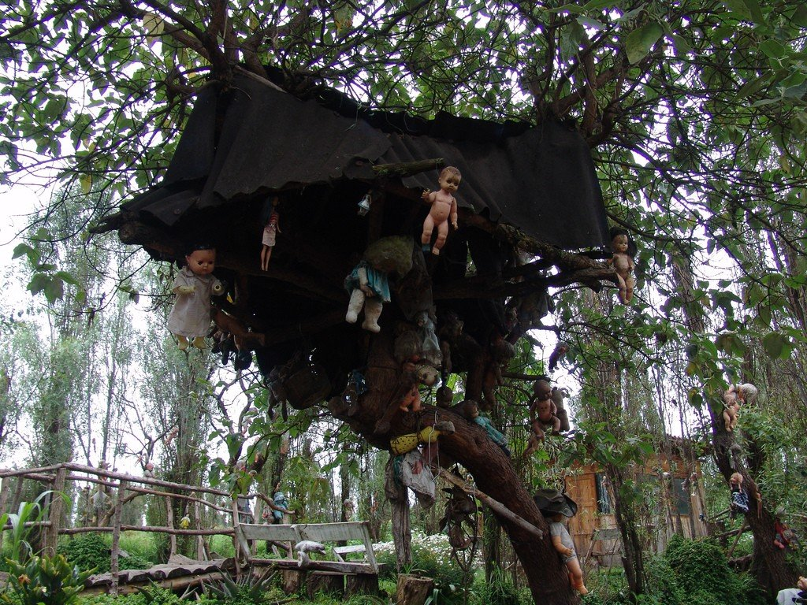
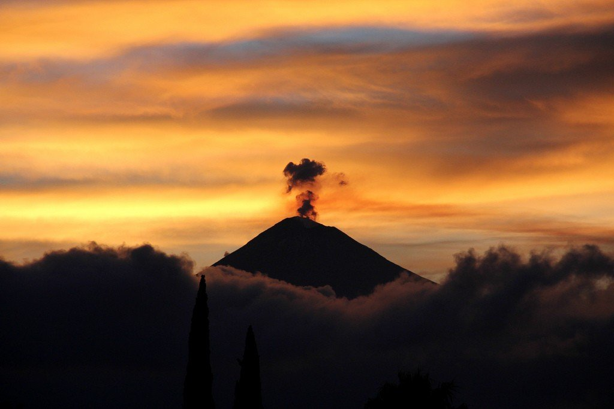

Чичен-Ица — один из самых больших, величественных и наиболее хорошо восстановленных монументов эпохи майя. Знаменитые пирамиды и храмы Чичен-Ицы — самые известные из древних памятников полуострова Юкатан. Прогуливаясь среди каменных платформ, пирамид и церемониальных залов, начинаешь лучше понимать и ценить высокую цивилизацию далекой древности. Город Чичен-Ица некогда был важным торговым и церемониальным центром. Считается, что его построили между 600 г. и концом первого тысячелетия нашей эры. Индейцы майя были хорошими математиками, инженерами и астрономами, что доказывают сохранившиеся здесь здания. Если вы хотите увидеть как можно больше, советуем приехать пораньше — в 11.00 здесь уже собираются толпы. Помните и о том, что ближе к полудню станет невыносимо жарко, а тени здесь практически нет.
Остров КуколОдно из самых загадочных туристических мест Мексики. Вполне безобидное название является лишь приманкой для посетителей – здесь взгляду открывается жуткое зрелище. Тропический остров населен изувеченными куклами, которые висят почти на каждом дереве и постройке.
В середине прошлого века здесь жил отшельник Джулиан Сантана Баррера. Он коллекционировал кукол, которых доставал из мусорных корзин. Таким образом мужчина хотел успокоить душу утонувшей поблизости девочки. Несчастье произошло прямо на глазах у Джулиана, и оставило неизгладимый отпечаток в его памяти. Он старательно собирал игрушки и обменивал их на овощи у местных жителей в течение полувека. Некоторые люди утверждают, что идея собирать кукол пришла в голову отшельнику не просто так. Первую игрушку он нашел на месте трагедии – это стало неким знаком для мужчины. Он верил, что кукла каким-то образом связана с усопшей девочкой. Джулиан иногда видел утонувшую в тревожных снах. После этого он стал безостановочно собирать пластмассовые изделия, убеждая себя, что таким образом задобрит девочку и избавится от жутких сновидений. Согласно другой версии, отшельник был сумасшедшим человеком, любящим выпить. Прежде он вел нормальный образ жизни, но пагубная привычка стала причиной отшельничества и бредовых идей. В конце ХХ века история о странном человеке, который собирает кукол, стала известна многим мексиканцам. Журналисты прибыли сюда, чтобы снять шокирующие кадры и поведать о них всему миру. Именно после этого события Остров мертвых кукол стал известен в каждом уголке земного шара. Туристы начали массово приезжать сюда, привозя в подарок отшельнику пластмассовых пупсов. Жизнь Джулиана закончилась трагично – в 2001 году его нашли мертвым в том самом месте, где погибла маленькая девочка. Самая вероятная причина смерти – сердечная недостаточность. С тех пор за островом присматривает племянник отшельника Анастасио Сантана. Собранная Джулианом коллекция впечатляет разнообразием. Куклы планомерно развешаны по растущим на острове деревьям. Внешний вид пластмассовых игрушек оставляет желать лучшего. За многие годы они покрылись плесенью, обветрились и лишились некоторых своих деталей. Здесь преобладают однорукие и одноногие куклы, смотрящие вдаль своими пустыми глазницами. Сотни подобных изделий навевают страх и тоску на посетителей.
Попокатепетль — действующий вулкан и второй по высоте пик Мексики. Название происходит от двух слов на языке науатль: попока — «дымящийся» и тепетль — «холм», то есть Дымящийся холм. Попокатепетль находится рядом с потухшим вулканом Истаксиуатль, вместе они объединены в Национальный парк Истаксиуатль-Попокатепетль. Вулкан можно разделить на 3 зоны: нижнюю, среднюю и верхнюю. Нижняя, благодаря пышной растительности считается зеленой зоной, покрытой ароматными хвойными лесами. Эта зона плавно перетекает в мертвую или каменную. Верхняя часть горы покрыта нетающими ледниками. Благодаря плодородности почв, окружающих вулкан, здесь произрастает «Дерево Туле», известный в мире тис, которое объявлено правительством Мексики памятником природы. Ствол его весит около 550 тонн. Опасно подниматься на гору во время активности вулкана, а лучшими месяцами для вылазок считаются март, апрель, сентябрь и октябрь.